Specific gravity of fine aggregates
Objective
To determine the specific gravity of given sample of fine aggregates (river sand and beach sand) using Pycnometer.
Apparatus used:
Pycnometer, Weighing scale, Glass rod etc.
Description Specific Gravity of Fine Aggregate is the ratio of mass of a given volume of fine aggregate to the mass of an equal volume of water. 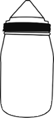

Take empty weight of pycnometer along with its cap using weighing scale.

Weight of empty pycnometer(W1)= _____ g
_____
Choose the type of sand
 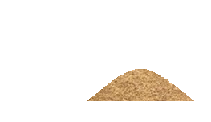
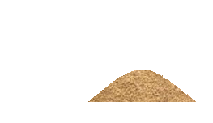

Open the cap to fill one third of pycnometer with fine aggregate and weigh the pycnometer with aggregate.
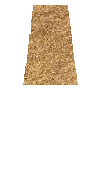


 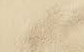
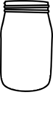
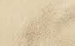
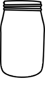


Weight of pycnometer + 1/3rd of fine aggregate(W2)= _____g
_____
Add water to pycnometer upto the brim level and shake it well to remove air bubbles. Then weigh it using weighing scale.

 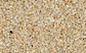
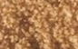
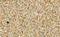
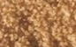
 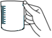
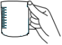
Weight of pycnometer + 1/3rd of fine aggregate +water (W3)=_____ g
_____
Empty the pycnometer and fill water upto brim. Weigh the pycnometer.
Weight of flask+water (W5) = _____ g
_____
Observation
Weight of empty pycnometer(W1)= _____ g
Weight of pycnometer + 1/3rd of fine aggregate(W2)= _____g
Weight of pycnometer + 1/3rd of fine aggregate +water (W3) = _____ g
Weight of pycnometer + water(W4) = _____ g
✔
✘
Specific gravity of fine aggregate = ( W2-W1 )⁄( W4-W1 )-( W3-W2 )Specific gravity of fine aggregate =
✔
✘
Specific gravity of fine aggregate = ( W2-W1 )⁄( W4-W1 )-( W3-W2 )Specific gravity of fine aggregate =
Observations:
| Trial | Specifc gravity of fine aggregate | Average specific gravity |
| 1 | ||
| 2 |
✔
Inference:
What is the range of specific gravity of river sand?
Less than 2.6 2.6-2.85 Greater than 2.85Inference:
What is the range of specific gravity of beach sand?
Less than 2.4 2.4-2.6 Greater than 2.6Trial =

Both ends of the pipe must be trimmed to ensure parallel faces.